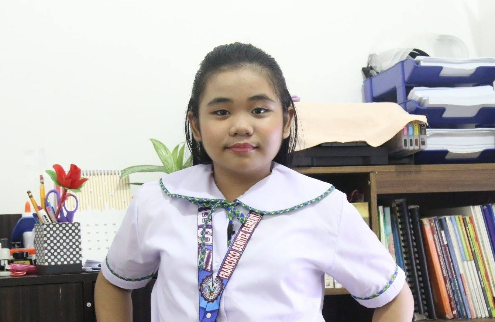

Jerian Morales – CEO and Founder of Aerial Journey
Visionary. Innovator. Proud Filipina.
Jerian Morales is a name synonymous with leadership and inspiration in the travel industry. As the founder and CEO of Aerial Journey, Jerian has redefined the way people experience air travel, creating pathways that connect not just destinations but also cultures and communities.
The Beginnings
Born and raised in Cebu, Jerian's childhood was steeped in the vibrant landscapes and rich traditions of the Philippines. Her passion for travel began early, fueled by her family's stories of adventure and discovery. After earning a degree in Business Administration from a prestigious university, she worked her way up in the travel sector, gaining firsthand experience in every facet of the industry.
But Jerian wanted more than a career—she wanted a legacy. In 1995, with a vision to showcase the beauty of the Philippines to the world, she founded Aerial Journey. It started as a small operation with just three employees and one goal: to make every journey memorable.
A Woman of Impact
Jerian's leadership goes beyond business. She has championed initiatives to promote sustainable tourism, ensuring that the pristine beauty of the Philippines remains intact for generations. Under her guidance, Aerial Journey has funded community projects in remote areas, empowering local artisans and creating jobs.
Her passion for cultural preservation has made her a sought-after speaker at global tourism forums. Jerian has been recognized with multiple awards, including the Asia-Pacific Travel Innovator Award and the Philippine Medal of Excellence in Entrepreneurship.